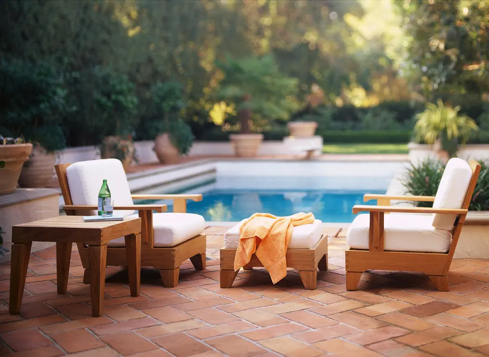

Opening your swimming pool for the spring can be a lot of work to do on your own. You can often save money by doing some of the work yourself, i.e. removing the cover, or vacuuming the pool.
Here is a list of some things you can do yourself to help lower the cost of opening your pool in the spring:
Need Expert Pool Services? Contact Jupiter Pool Cleaners to REQUEST A QUOTE TODAY!
- Remove, clean, fold and store winter pool cover.
- Test water balance and adjust calcium, alkalinity and pH levels
- Replace winter stored items; ladders, auto cleaner, baskets, plugs, gauges, etc.
- Inspect and test electrical service to pumps, lights, heaters, etc.
- Lube valves and O-rings. Wrap threaded plugs with new thread sealant.
- Flood lines, prime-up pump, start-up your motor and adjust valves for proper flow.
- Brush tiles and scrub skimmers with phosphate-free cleanser.
- Blow off, then hose off, your pool deck.
- Skim pool surface. Vacuum pool if there is algae present.
- Super chlorinate to breakpoint levels with liquid or granular chlorine.
- Brush pool walls and steps. Re-check chemical levels in 12-24 hours, adjust as needed.
- Backwash your filter when pressure gauge rises 8-10lbs or flow diminishes considerably.
Cold Climate Regions (Snowbelt)
- Remove the pool cover:
- Solid Pool Covers: Use a small cover pump to remove rain and snow melt. As the water is being pumped, "tighten up" the cover by pulling on its edges, so the water gathers into one easily pumped area. Another tip is to use a leaf blower underneath the cover, which inflates the cover slightly, while pushing the water into one area. A "bag type" leaf net and your pool brush on the pole can be used to remove leaves and debris from the cover. After water and debris is removed, drain water bags (or remove whatever is being used to hold down sides of cover). Water bags can be folded or rolled after being hosed clean. Remove cover quickly by fan-folding it into 3ft to 5ft folds on one end of the pool. Take cover to open area where it can be unfolded and hosed clean. A sloping yard or driveway makes this easier. When the pool cover is clean, allow to dry or use blower to hasten drying. Wrap it up tightly and place in a cool, dry location until next fall.
- Mesh Pool Covers: Use a broom, brush, leaf net, hose and/or blower to remove leaves and debris from top and edges of your mesh pool cover. Remove springs from the anchors with the removal tool. If you can't find your cover tool, in a pinch you can use a 3/4″ pipe to lever springs from anchors. Use 1/4″ hex key (Allen wrench) to carefully put anchors into the down position, flush with the deck. It's good practice to clean with a hose and lubricate with light oil, like WD-40. After putting anchors down, fan fold the mesh cover (accordion-style) to facilitate its reinstallation in the fall. Use hose, broom or blower to clean off cover as you make each fold. Fold it seam to seam, then roll like a sleeping bag and stuff it into the storage bag. Place on chair to dry for a few hours before moving it INDOORS for summer storage. If storing outdoors, hang up off the ground, and use moth balls to repel rodents from nesting in the cover during the summer.
- Remove expansion plugs (Freeze Plugs) from skimmers and wall returns
Put freeze plugs in a Ziploc bag and place near cover for use next fall. Discard any that are dry-rotted and/or cracked.
- Reassemble filter, pump, heater, etc. Install drain plugs into pump, filter, heater, chlorinator, etc. Use thread sealant such as Teflon tape on all threaded plugs, connections. Do not over-tighten! If an above-ground pool, reattach hoses removed at closing. Reinstall the pump and skimmer baskets, pressure gauges. If your filter is a D.E. or Cartridge type pool filter, make sure that the center clamp band is tight and properly positioned. Place filter valve to the filter position and open air bleeder. Open all incoming valves (before pump) and all return side valves (after filter). Lubricate valves and O-rings as needed. Fill pump basket with water from pool or hose. Replace pump lid tightly. Look for leaks out of pump. Double check that all valves and pressure relief orifices are open.
- Turn on power to pump & start system Watch the pressure on the filter gauge closely with your hand on power switch! Turn off (quickly!) if pressure rises well above normal range; or above 30 psi. Recheck that all return side valves are open. If no pressure builds up at all, and pump is not pumping, shut off power after 1 minute. Repeat priming process. Once the system is started, adjust valves and return fittings for proper flow. Check for leaks around pump and filter; repair as needed. Note start-up pressure on filter gauge. When psi is 10lbs above this (clean) number, backwash the filter. Empty the pump basket also at this time. If you have a pool heater, follow pilot lighting and test firing instructions.
- Equipment inspection, Safety inspection Spring opening time is ideal for annual preventative maintenance steps such as cleaning, lubricating, inspecting and replacing components in all of your system equipment. Check again for pressure leaks which may result in pipes or equipment blowing apart. Note water level and watch the pool for leakage during the following few days. Consult your owner`s manual and give everything a good inspection. Solar blankets should be kept off the pool until the chlorine and pH levels have stabilized. Look for and correct hazardous electrical conditions. Inspect pool for tripping and slipping hazards. Check all points of access to the pool, gates and doors leading to the pool should be locked and alarmed.
- Clean the pool Skim pool, vacuum pool, and brush pool, in that order. Leaf rake (bag) types skim nets are best. If pool is especially silty or has lots of algae, vacuum the Pool to Waste. Place the multiport filter valve on drain to waste position. After skimming and vacuuming the pool carefully, use a Pool Brush on the pool thoroughly.
- Check and Balance Water Chemistry Use a good quality pool water test kit. Replace test kit reagents every spring (annually). Test alkalinity first. If below the range of 80 – 120 ppm, add Total Alkalinity Increaser at a rate of 1 lb per 10,000 gals to raise alkalinity levels 10 ppm. Calcium hardness level should be 180 – 220 ppm. Test pH level after water has circulated 8 hrs. The pH level should be 7.4 – 7.6. After balanced chemicals have been circulated for 8 hrs, shock or super-chlorinate the pool. Cyanuric Acid levels should be tested if chlorine is used (outdoor pools only). Always read instructions on packaging for proper handling, treatments and application of the pool chemicals. Your pool is ready for use when chlorine level drops below 3.0 ppm, and water is clear.
Warm Climate Regions (Sunbelt)
If you didn't really winterize the pool, but rather reduced the amount of filter time and attention you gave the pool, then you can probably skip items 1-3 above. But follow steps 4-7 to keep things sanitary and working safe and properly. Again, consider hiring a professional pool company, at least once annually to double check your work and spot problems or maintenance items you may have missed.
Service companies can also make equipment tune-ups easier. Most pool service vans carry the small parts needed for your pool cleaner, skimmers, ladders, etc. Contact Jupiter Pool Cleaners Today! Any part you need for your equipment should be promptly replaced to prevent further damage to the unit itself. Some items, pool cleaners in particular, if not maintained, can be destroyed beyond repair with continued use.
Need Jupiter Pool Maintenance or Repairs? Contact Jupiter Pool Cleaners to REQUEST A QUOTE TODAY!